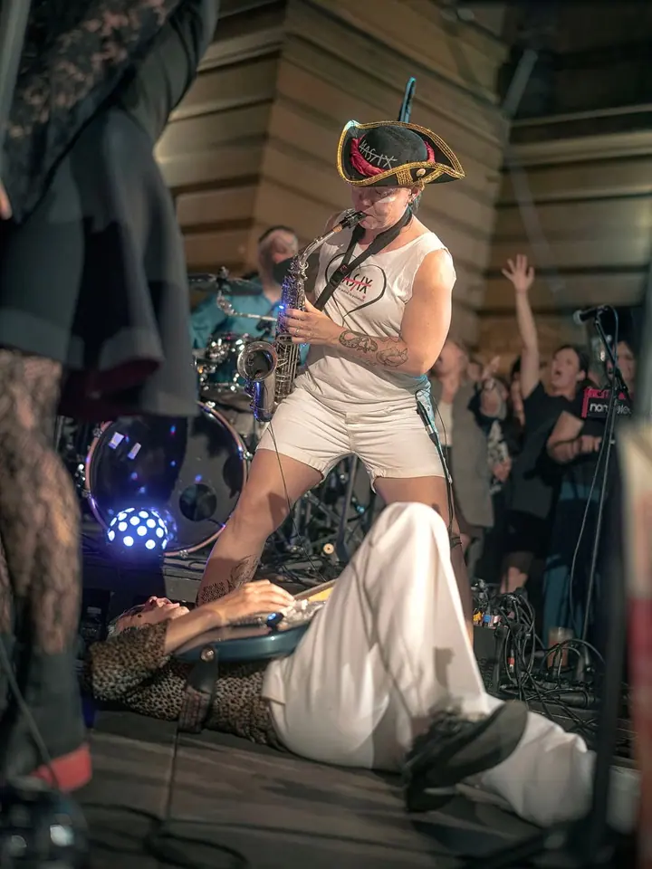
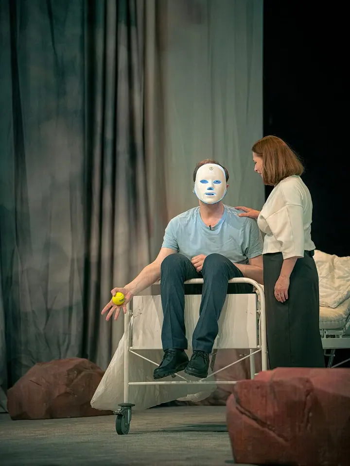
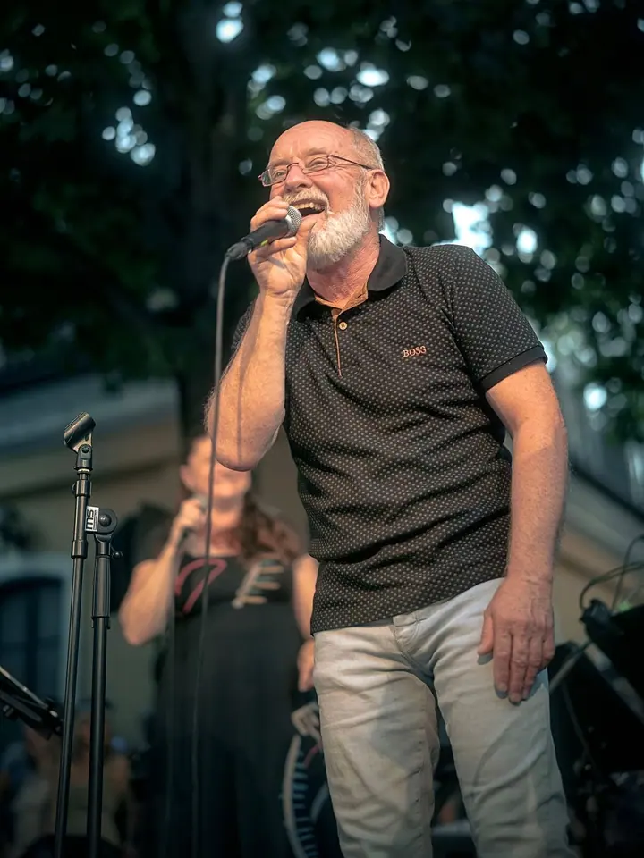
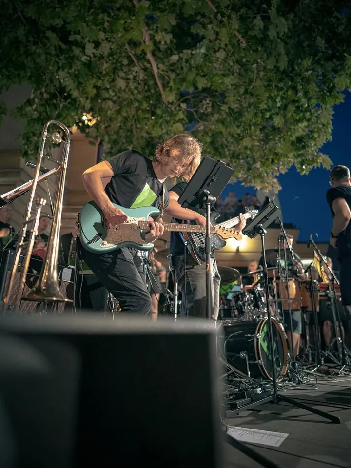
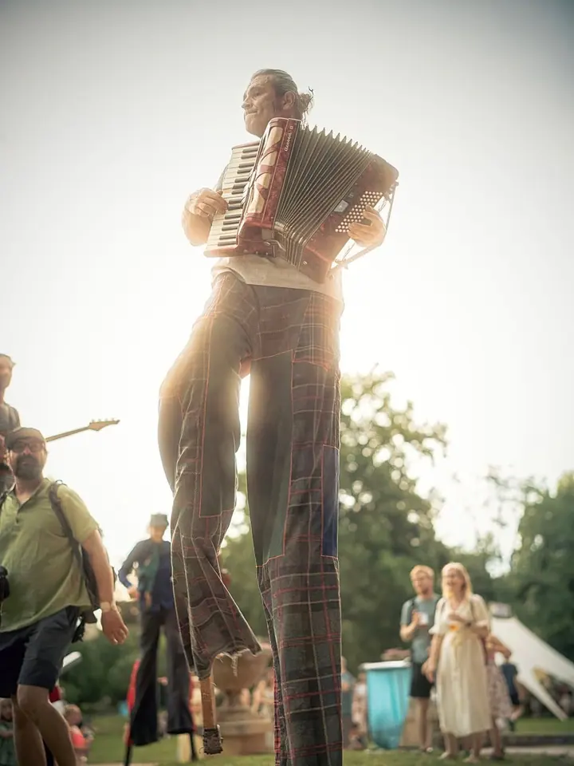

01 / 04
Reportážní fotografie
Pořádáte akci, která stojí za zvěčnění? Zdokumentuji představení, koncert, festival i celý průběh události a cenu domluvíme podle toho, jak je akce náročná.
Zeptat se na termín→




Divadlo, koncerty a akce ve světle reflektorů
Zeptat se na termín →(01) Ahoj
Jmenuji se Jan Šmída, fotím pod značkou Lightgraphy a pocházím z Náchoda. Nejčastěji mě potkáte v divadle , u pódia na koncertech a na festivalech a akcích, které si zaslouží být zdokumentované . Fotím ale také portréty, svatby a neobvyklé portréty v UV světle.
428lidí sleduje mou práci na Instagramu
453příspěvků s fotkami a příběhy
(02) Co fotím
01 / 04
Pořádáte akci, která stojí za zvěčnění? Zdokumentuji představení, koncert, festival i celý průběh události a cenu domluvíme podle toho, jak je akce náročná.
Zeptat se na termín→Dále nabízím
Profesionálně pořízené a upravené fotografie rodiny, originální profilovka nebo promo fotky. Každá tvář je unikátní a zaslouží si svou fotografii.
↗Focení šiji vždy na míru novomanželům a jsem pro každou špatnost, která vede k originální fotce. Jsem k dispozici od brzkých ranních příprav až po večerní zábavu.
↗Hodinové focení portrétů vás i vaší rodiny v UV světle a barvách. Namaluje vás talentovaná maskérka, nebo se namalujete sami, a k tomu si vytvoříte vlastní barevné pozadí, které je jediné na světě.
↗(04) Postup
Od první zprávy po hotovou galerii.
Krok 1 z 4
Pošlete mi e-mail nebo zavolejte a popište, co chystáte: akci, představení, svatbu nebo portrétní focení.
Krok 2 z 4
Každá akce je jiná a jinak časově náročná, proto rozsah i cenu vždy domluvíme podle vašich potřeb.
Krok 3 z 4
Na akci fotím průběžně celé dění, na svatbě klidně od ranních příprav až po večerní zábavu.
Krok 4 z 4
Vyberu nejlepší snímky, pečlivě je upravím a předám vám hotové fotografie.
Každé představení se hraje jen jednou
(05) Za objektivem
Kromě fotografie se věnuji scénickému šermu, učím Krav Magu a jsem velký fanoušek Star Wars. Možná proto mě nejvíc táhne tam, kde se hraje, šermuje a svítí reflektory.
Fotím divadlo, koncerty, festivaly i cosplay. V mé galerii najdete třeba Klicperovo divadlo, Michala Hrůzu, Jakuba Moulise, Compagnii della Morte, zámek Karlova Koruna nebo film Narušitel. Rád si hraju se světlem, ať už jde o malbu světlem, které jsem věnoval i semináře, nebo o focení v UV světle.
Vedle akcí fotím portréty, rodiny, promo fotky i svatby, které vždy šiji na míru novomanželům. Vybrané fotografie nabízím také jako tisky na plátně, každou nejvýš v deseti kusech.
Jan
Jan Šmída · Fotograf divadla, koncertů a akcí
Ceny na webu neuvádím, protože každá akce je unikátní a jinak časově náročná. Napište mi, co chystáte, a cenu domluvíme podle vašich potřeb.
Svatbu můžu fotit od brzkých ranních příprav až po večerní zábavu. Rozsah vždy šiji na míru vám dvěma.
Jde o hodinové focení portrétů vás nebo vaší rodiny. Namalovat vás může talentovaná maskérka a vizážistka, nebo se namalujete sami, a k tomu si vytvoříte vlastní barevné pozadí.
Ano, vybrané fotografie tisknu na kvalitní plátno natažené na dřevěném rámu. Každá je omezená na deset tisků, takže budete mít doma originální kus.
(07) Kontakt
Napište pár vět o tom, co si představujete, a termín, který se vám hodí.
smida@lightgraphy.cz